The system ingests daily BTC-USD prices, retrains a forecasting model every day, and serves the closing-price forecast for the next 7 days through a Flask REST API and a React dashboard. Every component is containerised, tested and published by GitHub Actions, orchestrated by Apache Airflow (with an equivalent Kubeflow pipeline), and deployed on Kubernetes (Minikube) with probes, persistent storage, autoscaling and an NGINX Ingress.
| Path | Purpose | Path | Purpose |
|---|---|---|---|
app/app.py, app/Dockerfile | Flask API, multi-stage image | k8s/*.yaml | ConfigMap/Secret, PVC, Deployment, Services, HPA, Ingress, UI |
src/etl_fetch.py, src/train_forecast.py | ETL and training (+ features.py, forecaster.py) | .github/workflows/ci_cd.yml | Lint, test, build, push |
dags/btc_etl_pipeline.py | Airflow daily DAG | docker-compose.yml | API + UI + Airflow + Postgres |
kubeflow/btc_kfp_pipeline.py (+ YAML) | Kubeflow pipeline, compiled spec | tests/, loadtest/, frontend/ | pytest, Locust, React dashboard |
Daily OHLCV data since 2017 (3,613 days) is cleaned and turned into 21 scale-free features (lagged log-returns, 3/7/14/30-day momentum, 7/30-day moving-average gaps, 7/30-day volatility, RSI-14, day of week). One model predicts the log-return to each of the next 7 days (direct multi-horizon). A random search over Ridge, Random Forest, Extra Trees, XGBoost and LightGBM (66 configurations, L1 and L2 losses, three training-window lengths) plus averaging ensembles is scored with walk-forward cross-validation (6 folds × 60 days, 7-day purge gap). The winner, Ensemble (XGBoost + Random Forest), is evaluated on the most recent 7 held-out days and registered only if MAPE < 10%. An 80% prediction interval comes from out-of-fold residuals.
| Endpoint | Behaviour | Validation / errors |
|---|---|---|
GET /health | status, uptime, loaded model version, pod name (used by K8s probes) | always 200 while the process is alive |
POST /predict | forecast_days (1–7, default 7) or a custom history array (≥60 closes) → dates, prices, 80% range | 400 for non-JSON, wrong types, out-of-range values; 503 without a model; 500 on internal failure |
GET /metrics | MAE, RMSE, MAPE of the latest validation run, naive baseline, CV, leaderboard | JSON errors for 404/405; /reload requires X-API-Key (401) |
Production server: gunicorn --bind 0.0.0.0:5000 --workers N --threads 2 app:app. The model sits behind a lock so
/reload swaps it with zero downtime. 47 pytest tests (API, pipeline, K8s manifests) run in CI on a synthetic dataset.
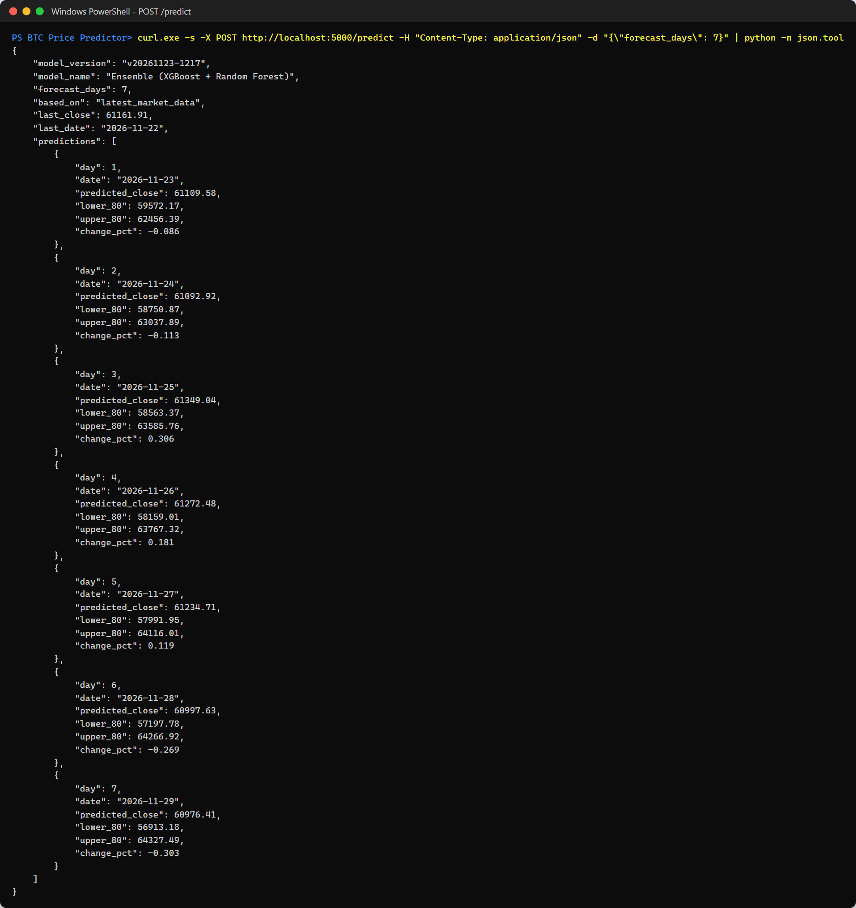
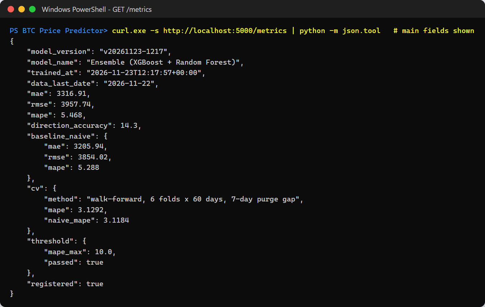
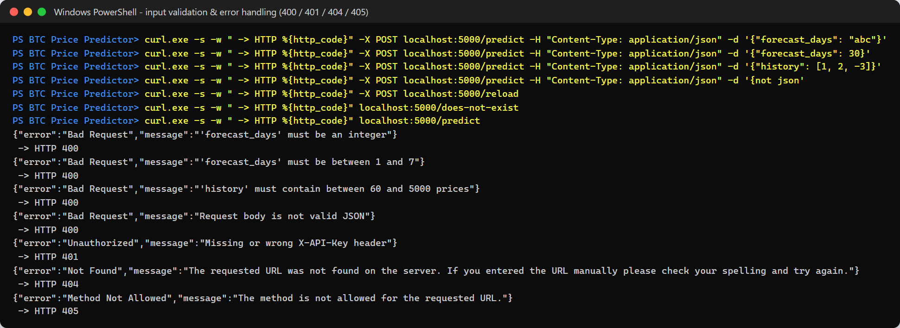
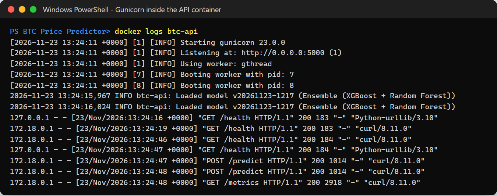
| Metric (7-day test window, 16–22 Nov 2026) | Model | Naive (last price) | Walk-forward CV MAPE | Value |
|---|---|---|---|---|
| MAE | $3,317 | $3,206 | Ensemble (XGBoost + RF) | 3.129% |
| RMSE | $3,958 | $3,854 | Best single model (XGBoost) | 3.140% |
| MAPE | 5.47% | 5.29% | Naive baseline | 3.118% |
The test week contained a sudden ~10% drop that no price-only model could anticipate; both model and baseline missed it by a similar amount. Across 360 cross-validation days all ML models stay within 0.05 points of the naive forecast, which is the expected behaviour of a near-random-walk series. Robust (L1) losses and ensembling gave the lowest error among the ML models.
python:3.10-slim builder installs a virtualenv; a fresh slim runtime copies only the venv and code, runs as non-root appuser (uid 1000), has a HEALTHCHECK, and bakes in a seed model. Switching to the CPU-only xgboost-cpu wheel removed ~650 MB of unused GPU libraries (1.97 GB → 803 MB; 178 MB compressed on Docker Hub). The UI image (Node build → nginx-unprivileged) is 21 MB compressed.dags/ src/ data/ models/, so a model trained by Airflow is picked up by the API through /reload.main and every PR: flake8, black, pytest, React build; then a matrix job builds both images with Buildx cache and, on main, logs in with DOCKER_USERNAME/DOCKER_PASSWORD secrets and pushes :latest and :<git SHA>.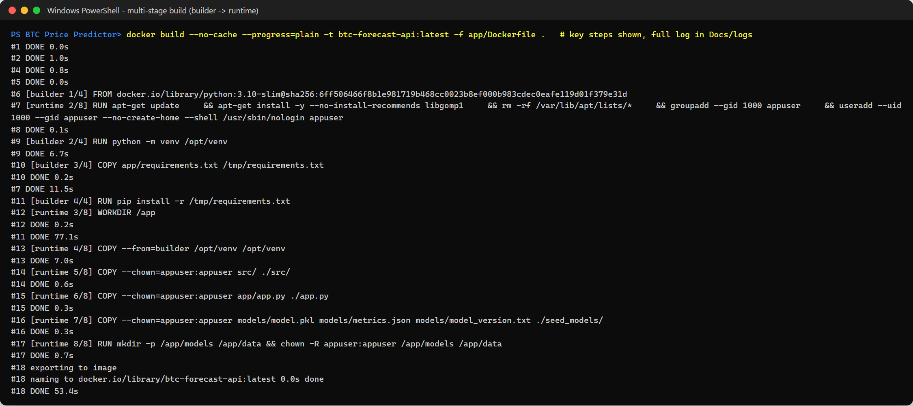
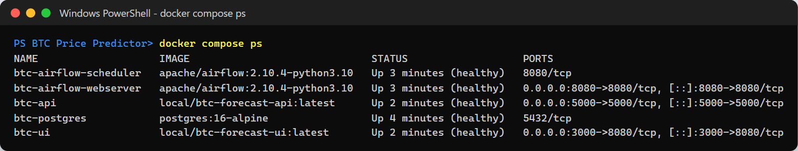
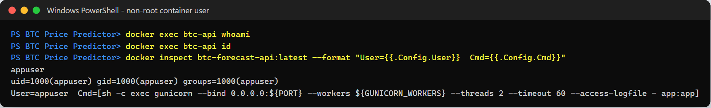
appuser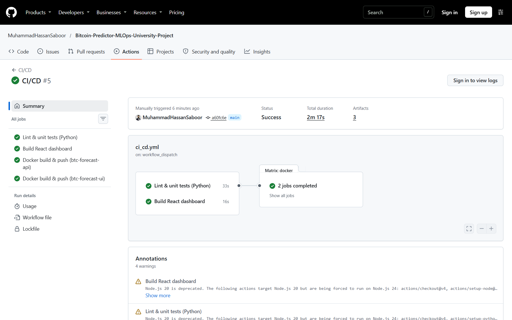
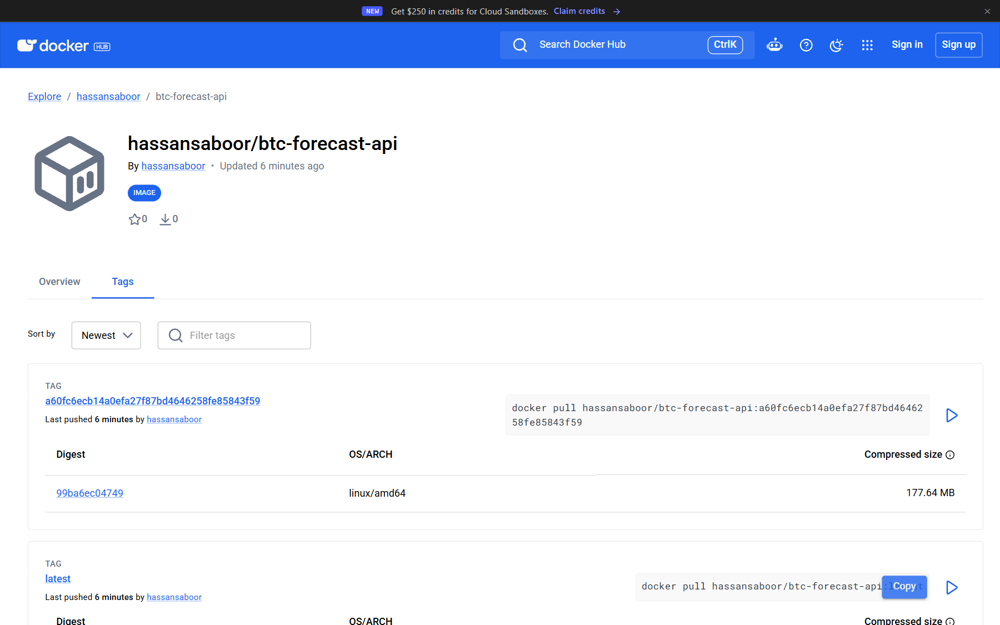
latest and the commit SHAC1: btc_etl_pipeline runs @daily (catchup off, 2 retries, timeouts) with four TaskFlow tasks:
fetch_data → preprocess_features → train_and_evaluate → reload_api_model. Training runs in a clean subprocess
(Airflow's dill patches pickling, which would otherwise make the saved model unloadable by the API).
The reload task is skipped when the new model fails the MAPE threshold, and it verifies that the API now serves the new version.
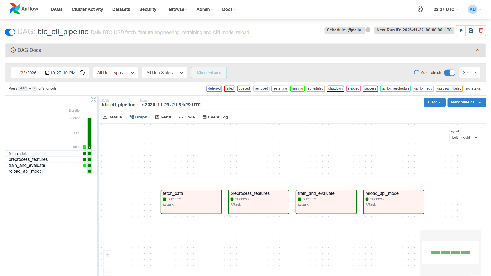
| Task (manual run 23 Nov) | Duration | Result |
|---|---|---|
| fetch_data | 8 s | 3,613 daily rows from Yahoo Finance |
| preprocess_features | 2 s | 3,553 rows × 21 features + 7 targets |
| train_and_evaluate | 18.5 min | v20261123-2224 registered (MAPE 5.49% < 10%) |
| reload_api_model | 1 s | /health reports the new version without a restart |
C2: kubeflow/btc_kfp_pipeline.py (KFP v2.18) defines ingest_data → generate_features → train_model
as container components running the published API image, plus a log_metrics component that publishes MAE/RMSE/MAPE
as Kubeflow metrics. Data, model and metrics move between steps as tracked artifacts. The pipeline compiles to
btc_kfp_pipeline.yaml and can be uploaded with a daily recurring run (--host … --schedule).
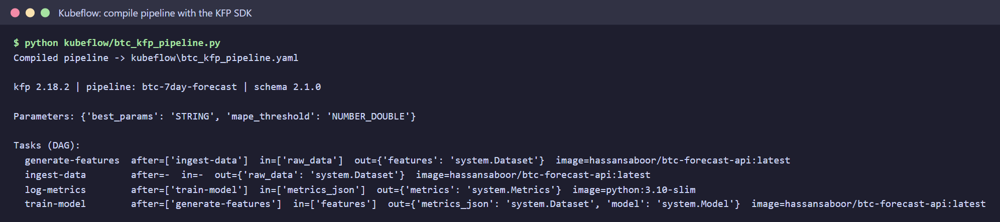
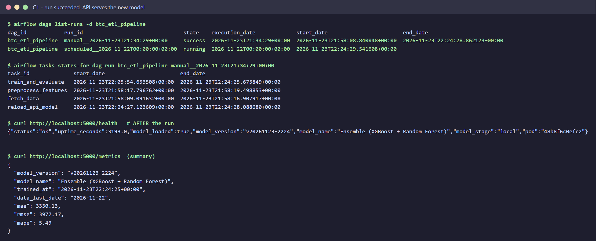
| Item | Configuration | Item | Configuration |
|---|---|---|---|
| D1 ConfigMap / Secret | MODEL_STAGE, LOG_LEVEL, PORT (+ workers, threshold) / API_KEY, both via envFrom | D4 Services | ClusterIP + NodePort 30080, port 80 → 5000 |
| D2 PVC | 1Gi btc-models-pvc at /app/models, seeded from the image | D5 HPA | min 2, max 8, CPU 60%, fast scale-up, 2-min scale-down |
| D3 Deployment | 3 replicas, liveness 15 s/10 s, readiness, 100m/128Mi → 500m/512Mi, non-root, zero-downtime rollout | D6 Ingress | NGINX, btc-forecast.local: API paths → API, / → dashboard |
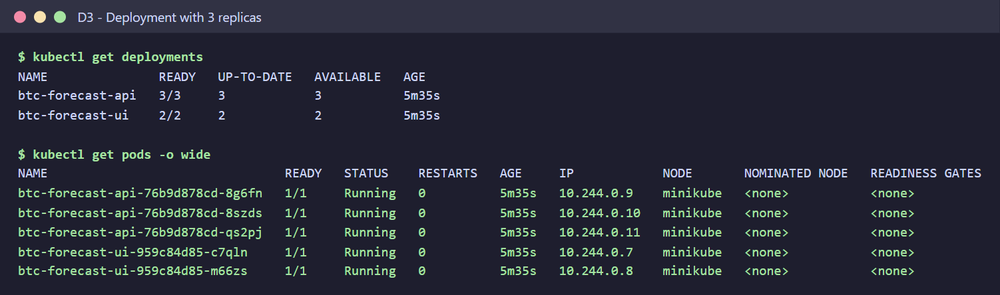
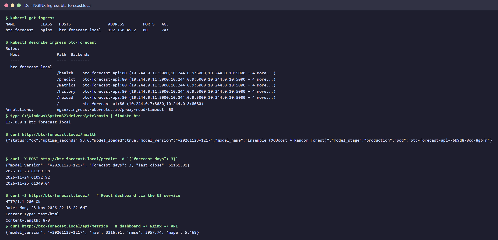
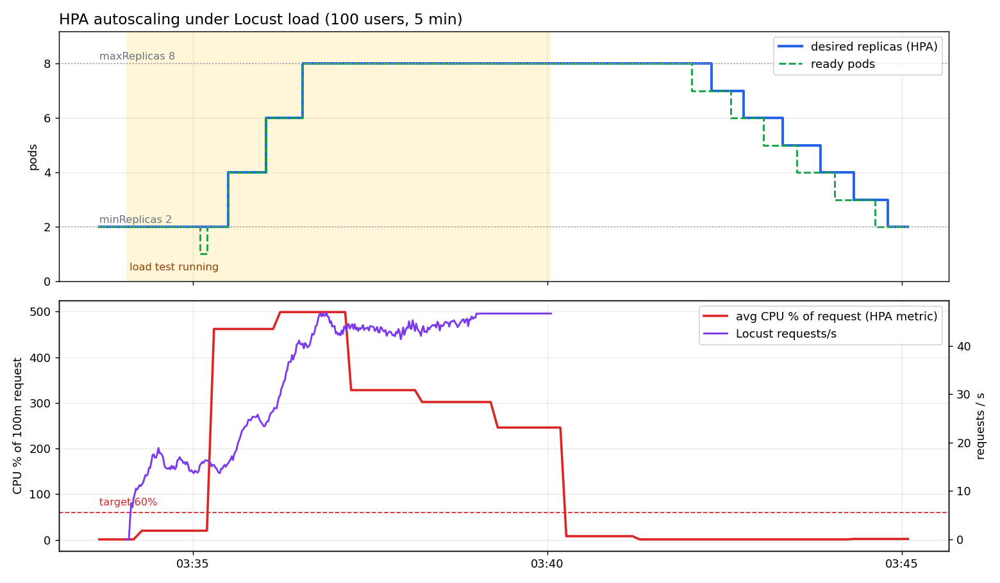
kubectl get hpa --watch samples and Locust history)| Load test (Locust, 100 users, 5 min) | Requests | Req/s | Median | Average | Failures |
|---|---|---|---|---|---|
| POST /predict | 6,609 | 22.2 | 350 ms | 1,082 ms | 2.8% |
| All endpoints | 9,813 | 32.9 | 260 ms | 1,001 ms | 2.9% |
All failures were dropped connections in the Minikube NodePort tunnel on Windows (no HTTP 5xx from the API). A first attempt with aggressive probes showed that liveness probes can restart pods that are only busy; the final probe uses a 10 s timeout and 6 failures, so only a truly frozen container is restarted.
A running API pod was deleted with kubectl delete pod. The ReplicaSet saw fewer pods than desired and
scheduled a replacement immediately; the new pod passed its readiness probe and received traffic after
19 s. The remaining pod kept serving requests the whole time, so there was no downtime.
v20261123-2224 registered.POST /reload sent to every pod: all 5 pods switched from
v20261123-1217 to v20261123-2224 without a restart.POST http://btc-forecast.local/predict returns the 7-day forecast from the live cluster.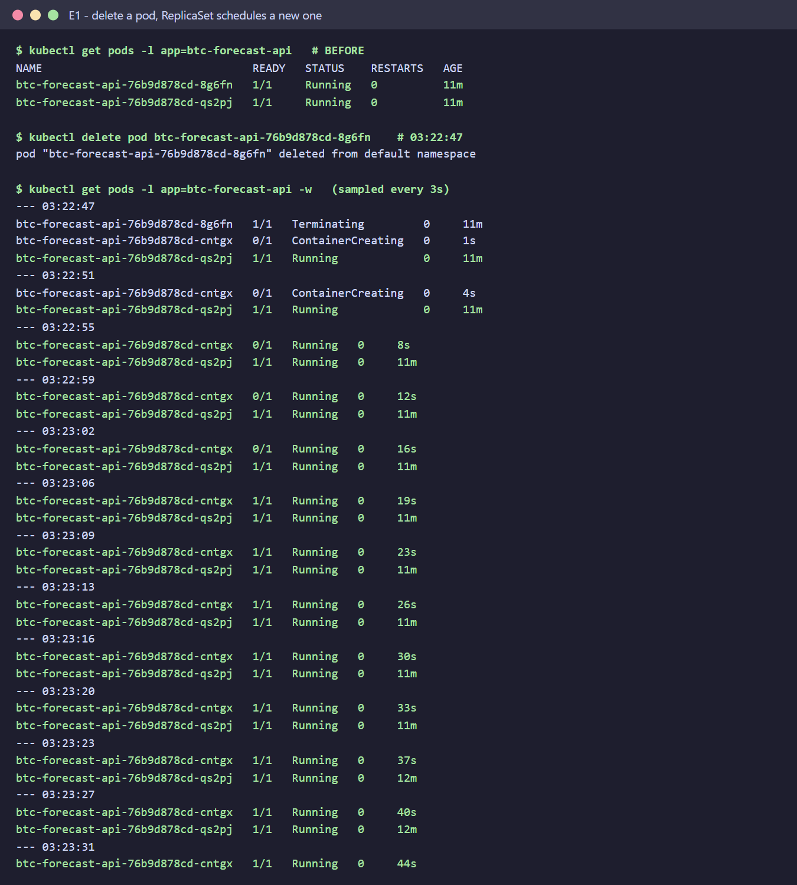
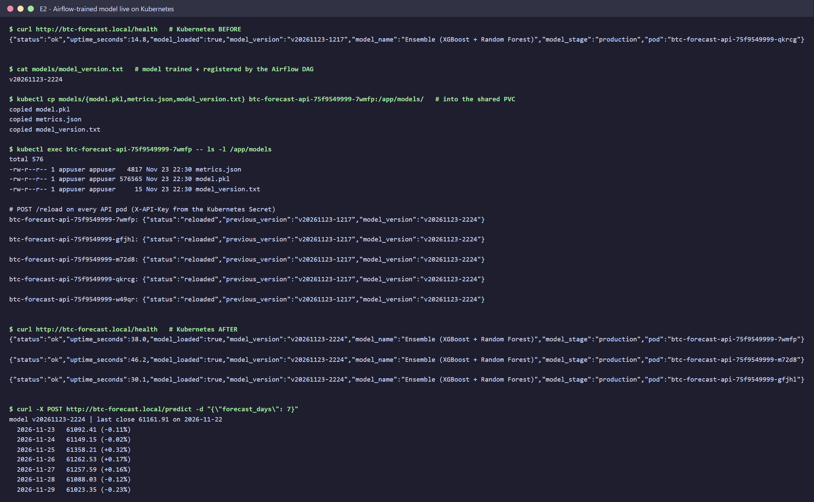
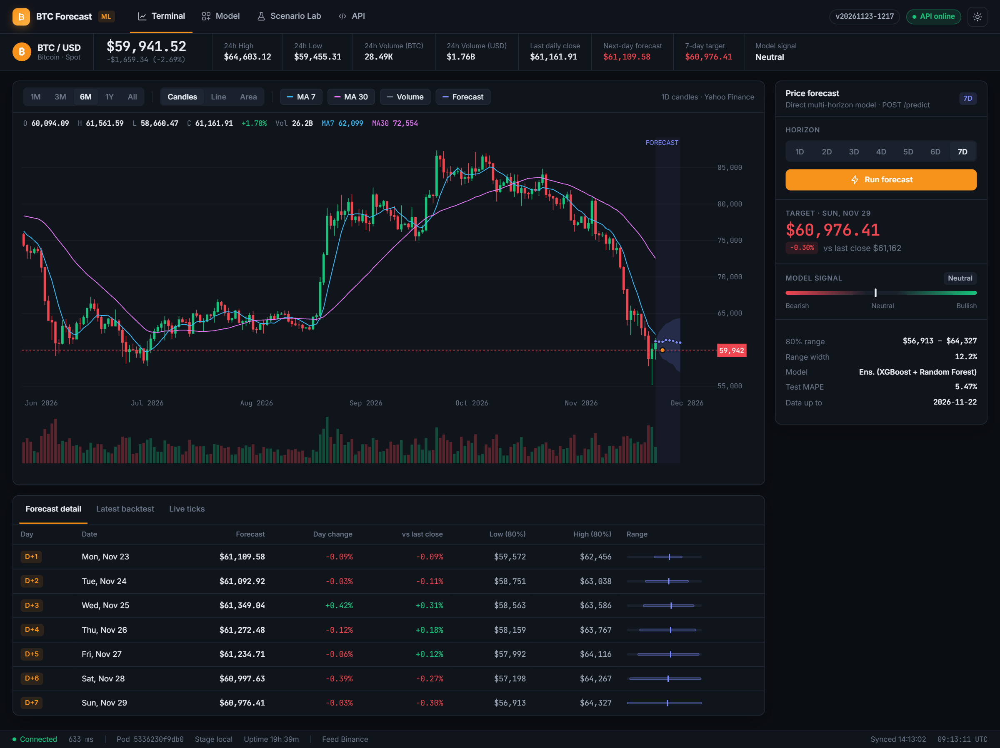
/predict calls (~0.1–0.3 s each) dominate, so horizontal scaling, rather than more
threads per pod, is the right lever./reload let the service survive pod loss and model updates without downtime.